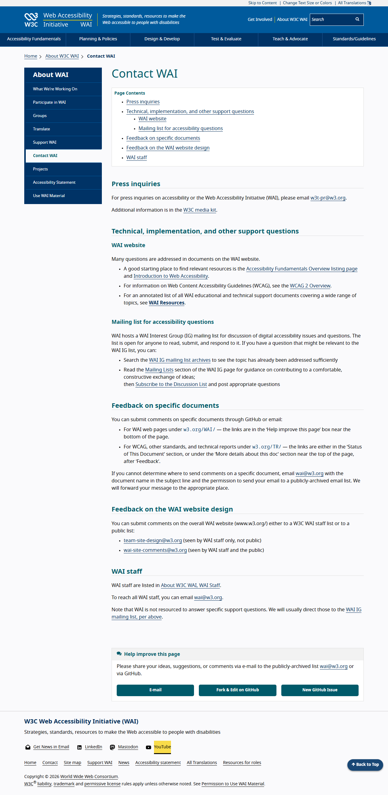

Legend
Marker numbers show the Tab order observed by A11yway during this browser run.
This is a browser observation, not a full screen-reader simulation or accessibility certification.
Viewport observed: 1280 x 720 CSS pixels.

1
2
3
4
5
6
7
8
9
10
11
12
13
14
15
16
17
18
19
20
21
22
23
24
25
26
27
28
29
30
31
32
33
34
35
36
37
38
39
40
41
42
43
44
45
46
47
48
49
50
51
52
53
54
55
56
57
58
59
60